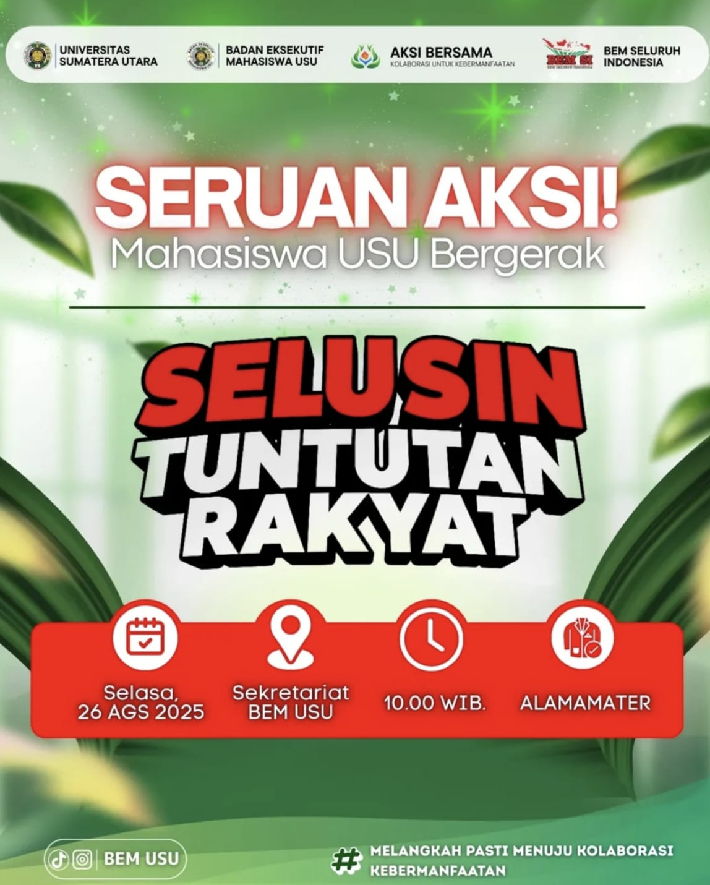
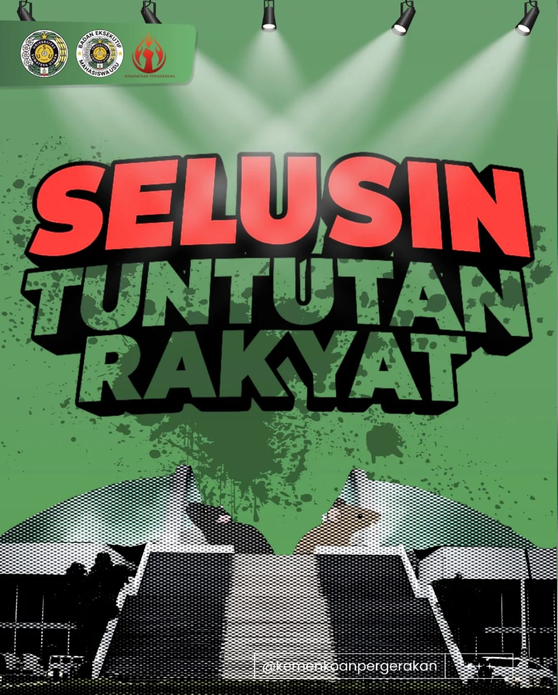

Gerakan Aksi oleh Aliansi Mahasiswa USU Bersama Badan Eksekutif Mahasiswa (BEM) Universitas Sumatera Utara
Gerakan "Selusin Tuntutan Rakyat" lahir dari keresahan mahasiswa atas ketidakadilan yang dirasakan masyarakat. Melalui aksi ini, mahasiswa menyampaikan aspirasi agar pemerintah segera menindaklanjuti berbagai masalah yang membebani rakyat.




Daftar Tuntutan Aksi
| No | Tuntutan |
|---|---|
| 1 | Hapus tunjangan mewah DPR |
| 2 | Gaji DPR proporsional dengan UMK/UMP |
| 3 | Sahkah RUU perampasan aset & RUU anti korupsi |
| 4 | Transparansi hasil audit BPK dan KPK |
| 5 | Alihkan anggaran DPR ke program pro rakyat |
| 6 | Revolusi partai politik |
| 7 | Kawal RKUHAP |
| 8 | Sahkan RUU masyarakat adat |
| 9 | Batalkan UU TNI |
| 10 | Tolak RUU Polri |
| 11 | Usut kasus korupsi di Sumut |
| 12 | Evaluasi kepemimpinan gubernur Sumut |
Informasi lebih detail dapat di lihat di sini